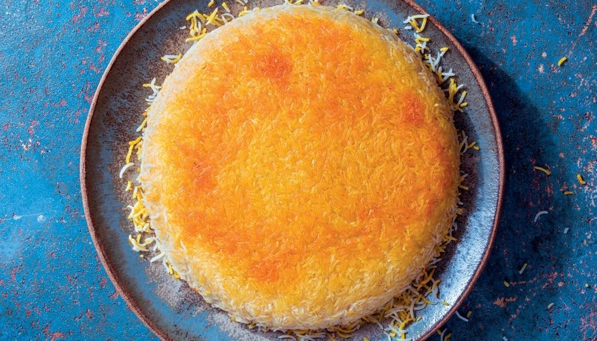

Tahdig - the king of Persian rice dishes!

Ingredients
2 cups basmati rice, rinsed very well
1/2 cup kosher salt
1/4 teaspoon saffron threads optional: ground with the bottom of a wooden spoon
3 tablespoons plain Greek yogurt
1 large egg
1 teaspoon turmeric
3 tablespoons unsalted butter
3 tablespoons olive oil
Steps